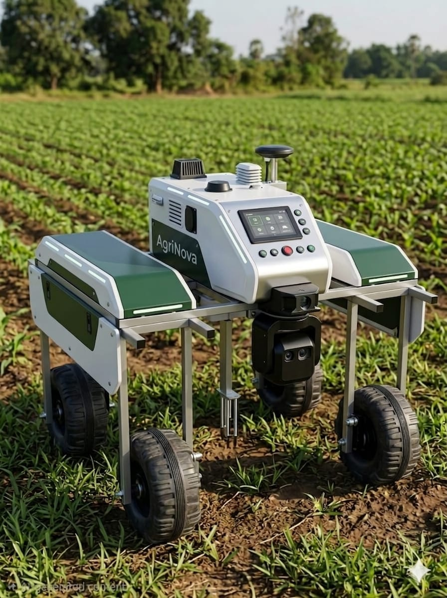

AgriNova is an autonomous agricultural robot designed for real-time environmental monitoring, plant health detection, computer vision, and AI-based farming decision support.

Agriculture faces real monitoring and decision-making bottlenecks that manual observation alone cannot solve efficiently.
Human crop inspection is slow, irregular, and may miss early disease or stress signs.
Farmers often lack live environment, soil, and plant health data for proactive decisions.
Existing agricultural robots are often too expensive or complex for local farms.
Fixed IoT sensors only monitor one location and cannot inspect areas dynamically.
Drone systems provide aerial views but cannot capture detailed plant-level information.
Many systems collect raw sensor data only, without intelligent risk prediction.
A modular approach to intelligent farming hardware and software.
4WD vehicle platform supporting manual, auto, and human-following modes.
Multi-sensor node for air/soil telemetry, rainfall, and GPS coordinates.
AI classification unit identifying health status, stress, and confidence.
High-level insights, risk level generation, and predictive recommendations.
Real-time DB sync and Firestore historical archiving for reporting.
LoRa/Wi-Fi bridge between robot units and cloud synchronization.
TensorFlow Lite onboard inference for instant plant classification.
Camera-based detection for obstacle safety and plant inspection.
Local Raspberry Pi / ESP32 status updates before cloud uplink.
Universal access to farm data via web and mobile interfaces.
Real-time obstacle detection and emergency stop protocols.
Precision pathfinding within field boundaries using hybrid telemetry.
SENSOR NODES
Edge units collect environment, soil, plant, and field condition data.
ON-DEVICE PROCESSING
AI inference and computer vision processing for real-time field monitoring.
CLOUD GATEWAY
LoRa and Wi-Fi bridge synchronizes robot data with Firebase services.
USER DASHBOARD
Real-time web and mobile visualization for monitoring, reports, and alerts.
AgriNova uses a hybrid multi-unit architecture that combines autonomous robot mobility, smart sensing, plant health monitoring, LoRa communication, Firebase cloud synchronization, and AI-based decision support. The system is designed to collect real-time field data through distributed robot units, process key plant and environment information on-device, and synchronize important results to the web and mobile dashboards. This architecture allows AgriNova to operate reliably in farm environments while supporting live monitoring, historical analysis, and intelligent recommendations.
EDGE AI
On-device plant intelligence
COMPUTER VISION
Vision-based plant monitoring
SMART SENSING
Environment and soil monitoring
AUTONOMOUS
Self-guided field navigation
AI ANALYSIS
Insights and risk levels
CLOUD SYNC
Live sync with Firebase
LORA COMMUNICATION
Long-range robot bridge
SOLAR POWER
Sustainable field operation
AgriNova monitors key environmental and health parameters required for smart farm decision support.
Air Temp
Atmosphere monitoring
Humidity
Moisture sensing
Pressure
Atmospheric status
Altitude
Location elevation
Light Intensity
Available sunlight
Rainfall
Precipitation detection
Soil Moisture
Root-zone hydration
Soil Temp
Ground thermal state
Motion
Field activity scan
GPS Location
Real-time coordinates
Plant Status
AI health result
Vision Analysis
Onboard AI visual
Join the digital agriculture revolution today. Monitor your crops with unprecedented precision and efficiency through the AgriNova system.